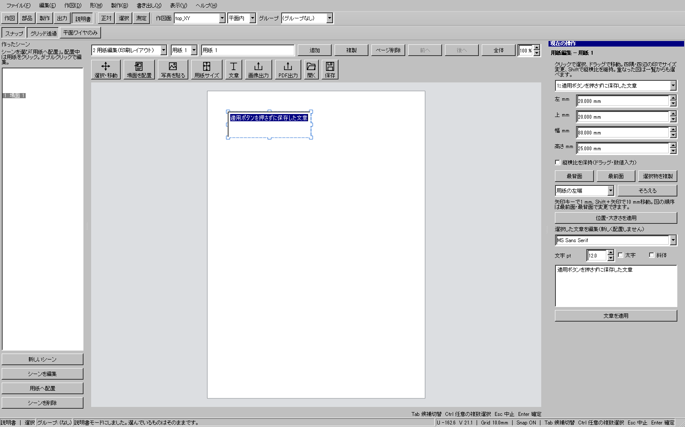
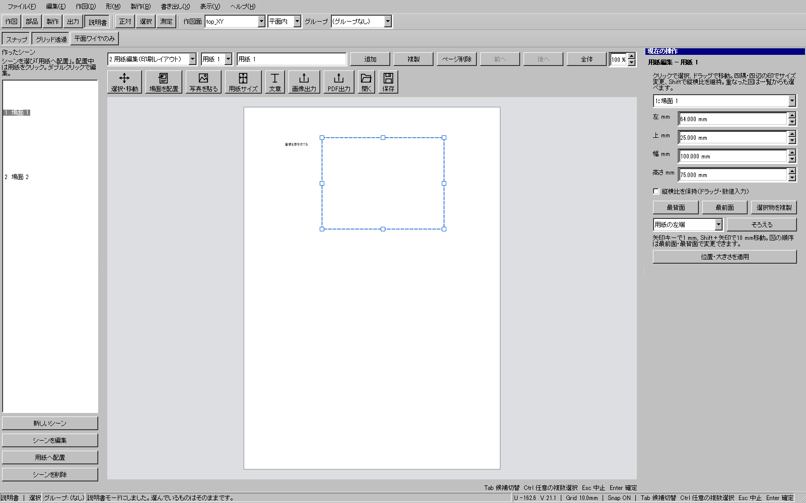

読み込み高速化と説明書のGUI改善
2026-10-19。基点35f573509、最初の実装候補473518934。Windowsの実Qt操作試験と読み取り専用レビューを組み合わせて確認しています。
2f80f8ed3は全体195試験・通常/配布UI各547試験を通過。手順書とキー操作試験を追加した09660aeaeを最終検証中です。23時30分まで別経路の点検を継続します。
最初に整理した改善項目
- シーンを選ぶ操作と、用紙へ置く操作を分ける。
- 用紙上で図や文字を選択・移動し、8ハンドルでサイズを変更する。
- 文字をダブルクリックで直接編集し、書式と本文を保って保存・Undoする。
- 整列、前後関係、複製、右クリック、矢印キーによる移動を加える。
- ズーム・パン・全体表示、図の縦横比保持を加える。
- 取り込み部品の検索と、表示中の候補だけの一括チェックを加える。
- シーン・用紙の順序変更と、出力サイズ設定の保持を加える。
- 説明用の模式図を実画面へ交換する。
既存の3D場面参照、PNG/JPEG貼付、フォント変更、KCI、画像/PDF出力は維持しています。KCIの形式変更はありません。
同一モデルでの読込比較
| 版 | 初回・中央値 | 再読込・中央値 | 初回の3回実測（ms） |
|---|---|---|---|
| 変更前 | 10,225 ms | 1,082 ms | 10225, 10296, 10041 |
| 変更後 | 5,409 ms | 807 ms | 5409, 4847, 5661 |
初回は約47%、再読込は約25%短縮。同じモデルを変更前後交互に3回、毎回独立した計算キャッシュで測定しました。OSファイルキャッシュを消した測定ではありません。
非表示面の表示用メッシュを必要時まで遅らせ、元ワイヤーから独立に作る面だけ最大2ジョブ並列化しました。BRep・編集履歴・境界は保持します。元ファイルのSHA256は測定前後で一致しました。
実操作画面


構成の変更
| 役割 | 追加・変更した主なファイル |
|---|---|
| 読込の計時・並列処理 | V2DocumentTiming.h、V2GuideBuildJobs.cpp/.h、V2DocumentWorker.cpp |
| 用紙の直接操作 | V2InstructionControls.cpp、V2InstructionSheetActions.cpp、V2InstructionSheetEditing.cpp |
| 操作の回帰試験 | V2SelfTestInstructionUsability.cpp、V2SelfTestInstructionPerformance.cpp、V2SelfTestDocumentOpen.cpp |
| マニュアル生成 | tool_procedures.py、lesson_renderer.py、実画面PNG、各機能HTML |
説明用SVG248ファイルを削除し、候補一覧のinline SVG1件も実画面へ交換しました。製品ボタンのアイコンは保持しています。削除ファイルの全一覧。
検証記録
重点20/20をWindowsとoffscreenで通過。コマンド入口168件、短い整合9試験も通過。8ハンドル×負位置・巨大・薄形×比率保持の96条件、取消後の右欄、文章と書式のUndo順、別入口の文章編集を含みます。inline編集中の実キーCtrl+Enter/Ctrl+Z/Ctrl+S/Deleteも両環境で通過。最終候補の全体・配布版結果は完了後に追記します。
OS操作APIは画面取得がタイムアウトしたため、この経路の実操作成功とは扱っていません。ユーザーの編集中アプリと元モデルは変更していません。
高倍率の用紙表示
| 800%表示の試験 | 変更前 | 変更後 |
|---|---|---|
| 同じ図の再描画 | 114 ms・図を再生成 | 1 ms・生成済み画像を再利用（Windows画面では3 ms） |
| 画面外の図 | 113 / 126 ms・2回生成 | 0 / 0 ms・生成なし |
単純な板の確認場面で計測。初回は116→111 ms。変更前後の表示/出力画像4枚は画素完全一致です。キャッシュは128 MiB、16項目を上限とし、全体画面の外にある図を生成しません。
23時30分までの追加点検
実モデルの読込、左ペインcheckbox50回、厚み化後のUndo/Redo3往復と保存再読込、平面/曲面の窓投影と穴面生成の5件が成功。原本SHA256は不変でした。
旧ライト投影試験1件は、現在の原本に存在しない部品UUIDを前提として生成前に失敗しました。成功やskipとして数えません。通常の投影・押し出し回帰と、現行原本に適合する窓穴試験を区別して記録します。
実行順の逆転、150%表示のGUI、HOモデルの製作一連、1,000部品超モデルを追加予定です。内蔵ブラウザーはfile URLがセキュリティ制限で拒否されたため、ブラウザー実表示は未確認。HTML・リンク・画像・タグ検査は通過しています。